01 / 09
Deborah Adventures: Mr. Fear
Author: Kazybek Yeleussizov
Diversity Games Studios
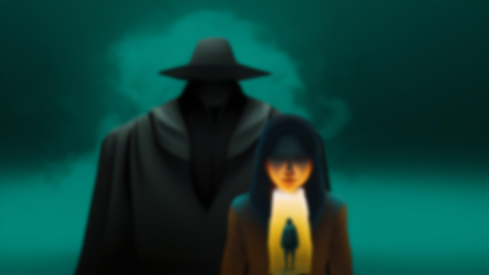
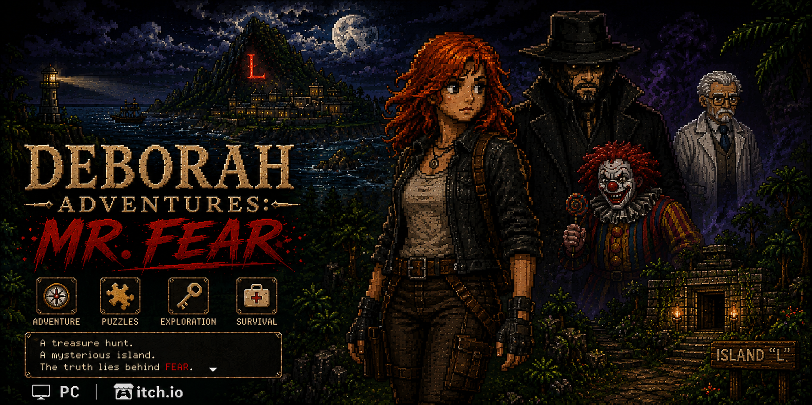
RELEASED PROJECT / ADVENTURE / PC
A single-player top-down adventure and my first released game project. Deborah Howard, a professional treasure hunter, joins a reconnaissance squad sent to investigate the disappearance of three employees on Island “L”.
Web version based on the original project presentation.
Author: Kazybek Yeleussizov
Diversity Games Studios

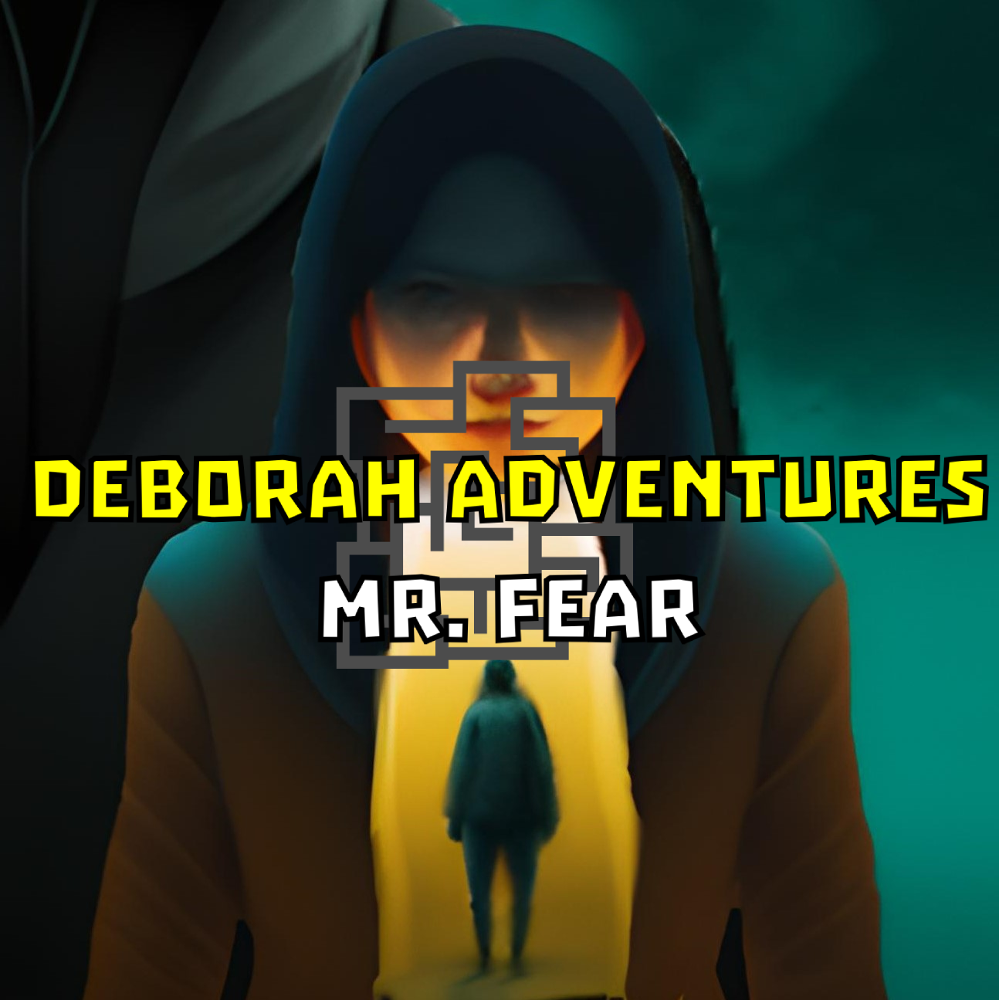
The world is similar to our world. In 1984, friendly young families start their own treasure hunting company called “We are Everywhere”. In 1998, the company opened a treasure hunt academy. In 2002, Deborah Howard enters this academy; in 2008 she finishes and goes to work. In 2010, three employees disappear on Island “L”. The company sends a reconnaissance squad, and Deborah is on that squad.
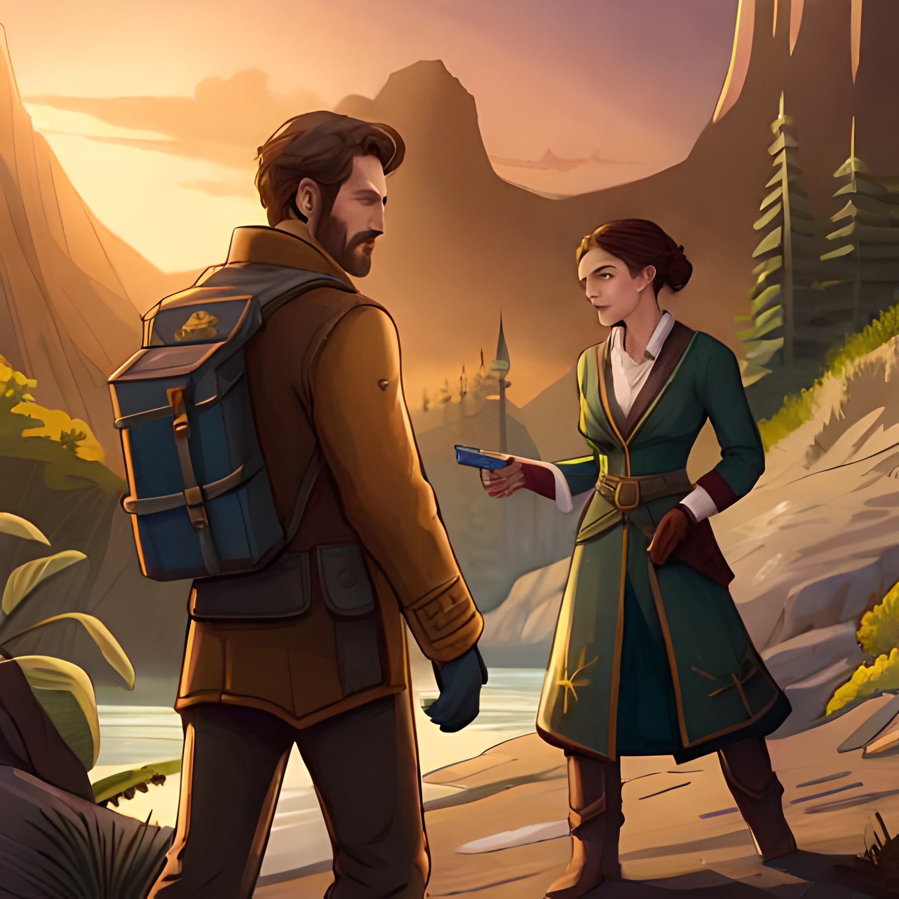
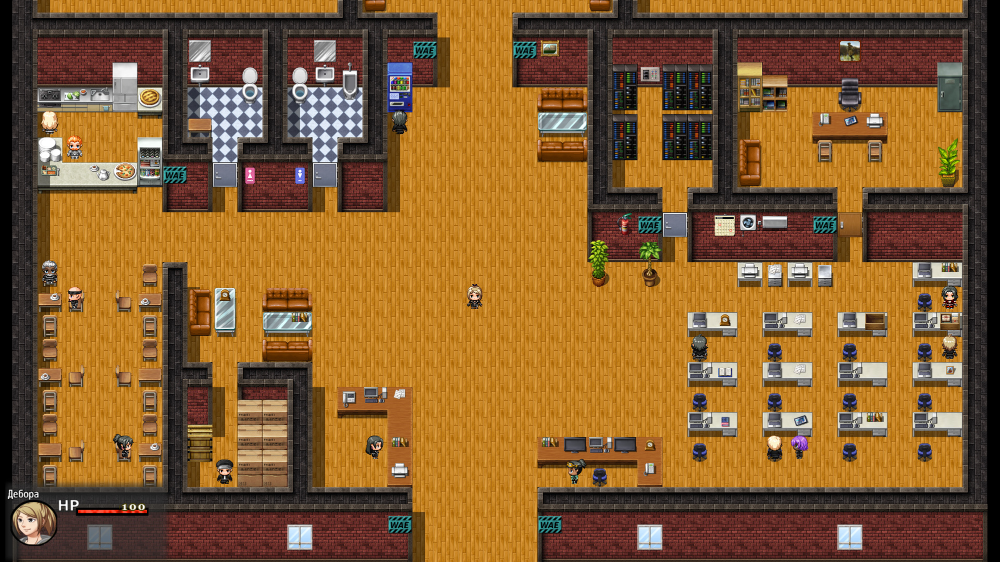
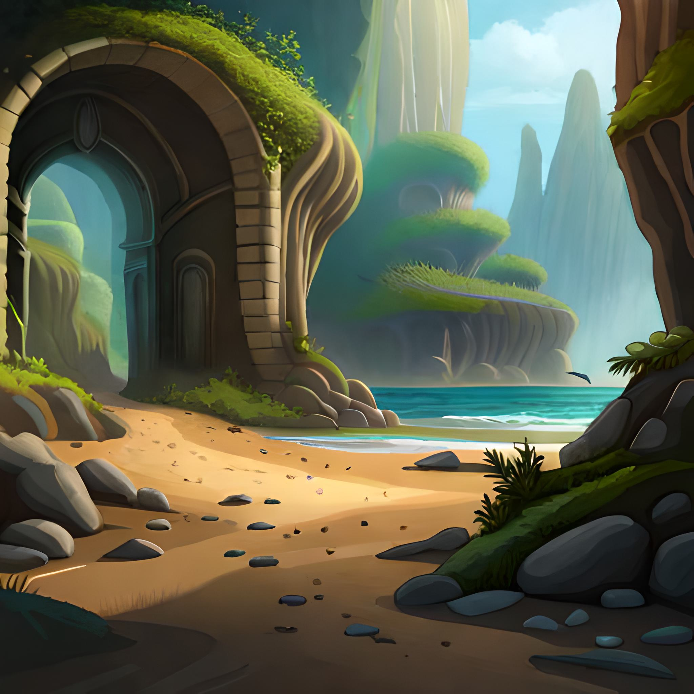
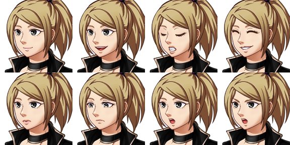
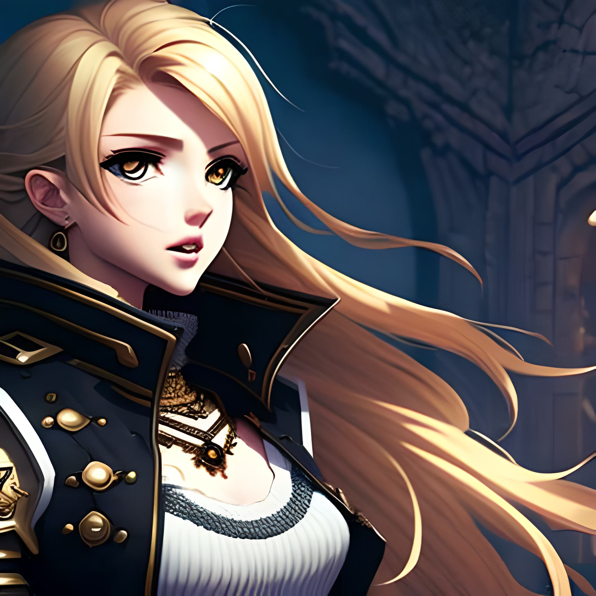
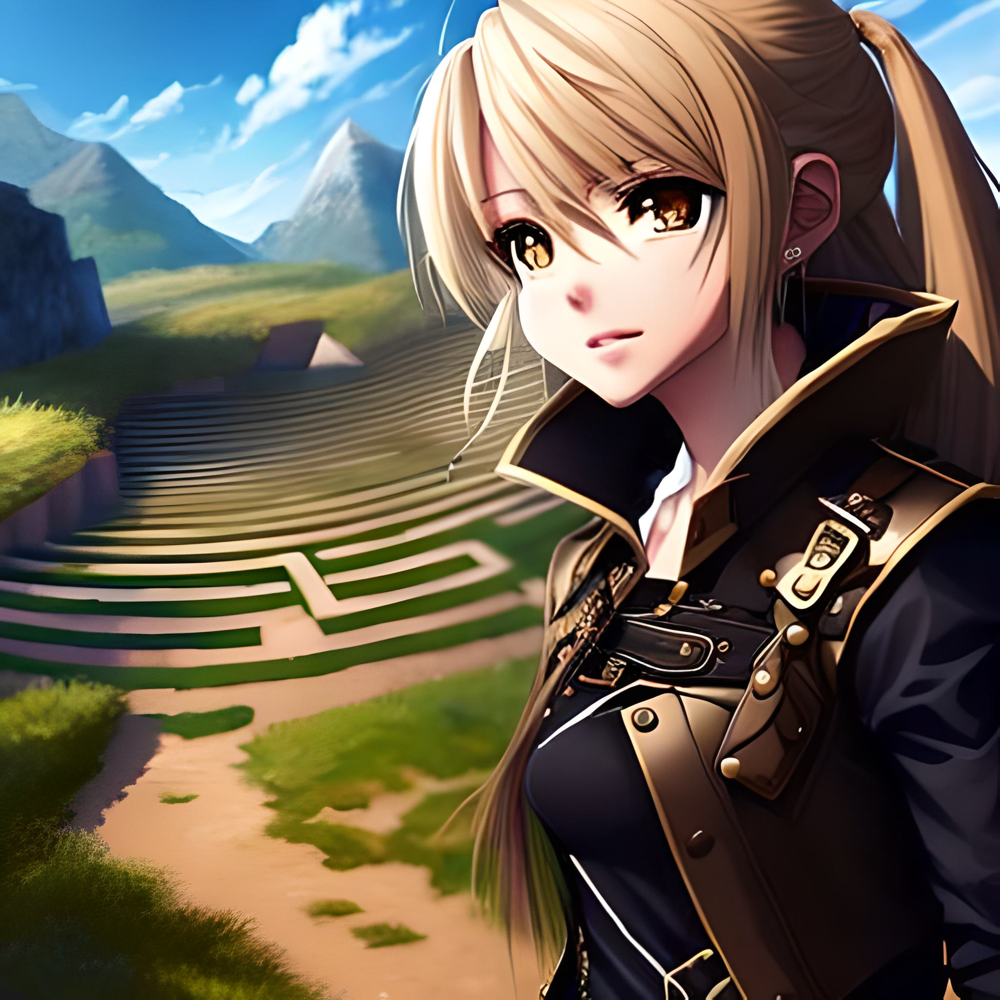
The gameplay consists of passing obstacles, puzzles and collecting keys in levels.
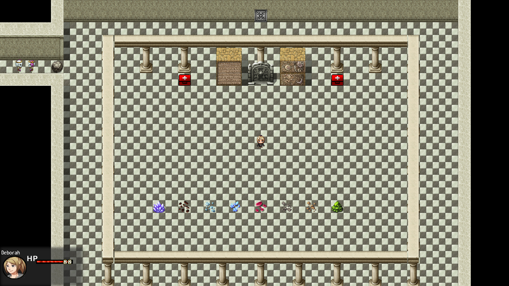
When the player touches damaging objects, health is reduced and the player is pushed back with a visual effect. Spike damage: 5. Mob damage: 2. Large first-aid kits give 75 health; small first-aid kits give 25.
The jump mechanic helps players pass spikes. Movable objects can be a main or additional level mechanic. Players also use keys and PIN codes to progress through levels.
Later, the player finds a bat for protection in enemy encounters. The project also includes companions, and on some levels the player changes characters.
The released project can be played on itch.io.
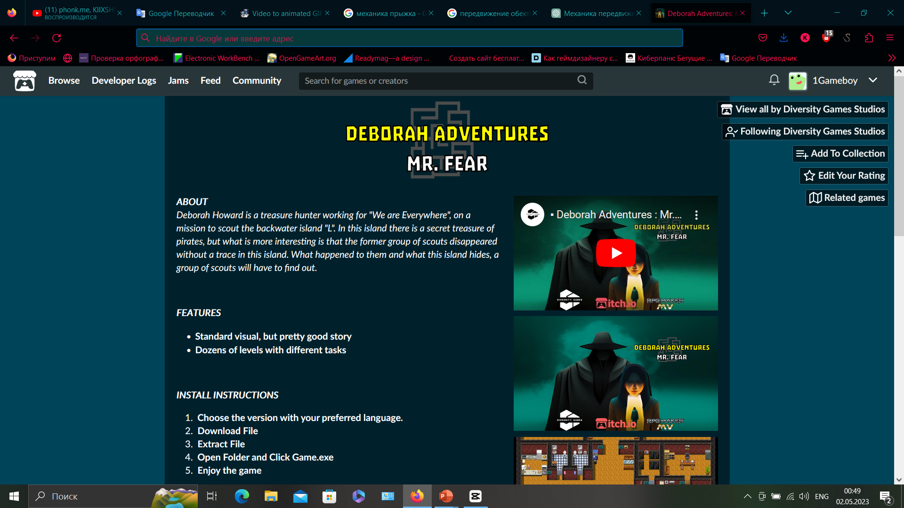
Deborah Adventures: Mr. Fear is available on the Diversity Games Studios itch.io page.
itch.io ↗A gameplay video will be embedded here from YouTube.